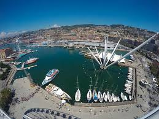
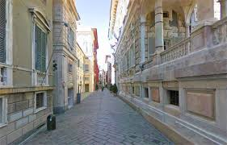
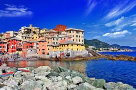

5 Posti da Visitare a Genova
1. Acquario di Genova
Situato nel Porto Antico, l'Acquario di Genova è il più grande acquario d'Italia e uno dei più importanti d'Europa. Ospita oltre 600 specie marine, offrendo un'esperienza educativa e affascinante per tutte le età. È parte del complesso del Porto Antico, progettato da Renzo Piano, che include anche il Museo del Mare Galata e il sottomarino Nazario Sauro.
2. Porto Antico
Il Porto Antico è una zona riqualificata da Renzo Piano, cuore pulsante della città moderna. Oltre all'Acquario, ospita attrazioni come la Biosfera, il Bigo (ascensore panoramico), il Museo del Mare Galata e numerosi ristoranti e caffè con vista sul mare.
3. Via Garibaldi (Strada Nuova)
Via Garibaldi, già conosciuta come Strada Nuova, è un elegante viale del centro storico di Genova, patrimonio dell'umanità UNESCO dal 2006. Lungo questa via si trovano i "Palazzi dei Rolli", residenze nobiliari costruite tra il XVI e il XVII secolo, come Palazzo Rosso, Palazzo Bianco e Palazzo Doria-Tursi. Questi palazzi ospitano importanti musei e gallerie d'arte.
4. Cattedrale di San Lorenzo
La Cattedrale di San Lorenzo è il principale luogo di culto cattolico di Genova. Costruita tra il XII e il XIV secolo, presenta uno stile gotico-romanico. Al suo interno si trovano importanti opere d'arte e il tesoro di San Lorenzo, che include reliquie e oggetti sacri di grande valore storico e religioso.

5. Boccadasse
Boccadasse è un pittoresco borgo di pescatori situato nel quartiere di Albaro. Caratterizzato da case colorate e un'atmosfera tranquilla, è il luogo ideale per una passeggiata romantica o una cena con vista sul mare. La Chiesa di Sant'Antonio, situata nel borgo, è un importante luogo di culto dedicato a Sant'Antonio di Padova.
